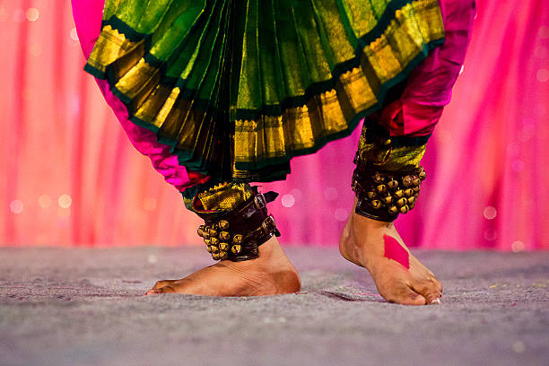
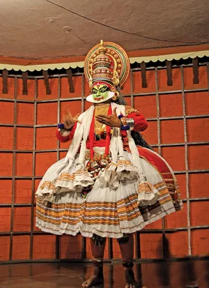
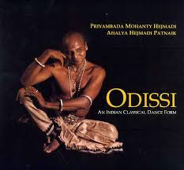
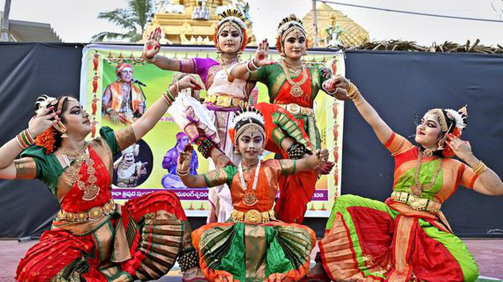

Bharatanatyam
Bharatanatyam is a classical dance form originating from Tamil Nadu. It is characterized by its grace, intricate footwork, and expressive storytelling.
Kathak
Kathak is a classical dance form from North India. It is known for its storytelling, dramatic expressions, and fast footwork.
Odissi
Odissi is one of the oldest classical dance forms from Odisha, known for its fluid movements and sculptural poses.
Kuchipudi
Kuchipudi is a classical dance form from Andhra Pradesh, featuring both solo and group performances with elaborate gestures and expressions.
